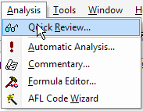

Quick Review
Opens Quick Review window that provides overall market information, such as: daily symbol quotes, daily/weekly/monthly/quarterly/yearly returns comparison table, or Price/Earnings and Price/Book value comparison.
Automatic Analysis
Opens Automatic Analysis window that enables you to check your quotations against defined buy/sell rules or explore your database. AmiBroker can produce a report telling you whether buy/sell signals occurred on a given symbol in a specified period of time, simulate trading, giving you an idea of the performance of your system, or optimize the trading system you use to improve its performance.
Commentary
Displays Commentary window, which allows you to view textual descriptions of the actual technical situation on a given market.
Formula Editor
Opens the Formula Editor window that enables you
to write your own formulas.
AFL Code Wizard
Opens the AFL Code Wizard - the add-on program that creates trading system AFL
code from plain English sentences. See the introduction
video to AFL Code Wizard.